Drills, summits and a very active plague season
Before anyone got sick: two China–Russia drills, two Xi–Putin meetings, and the Irkutsk institute growing live plague from an unusually active border hot spot.
Putin's state visit to China: biosafety in the joint statement
The joint statement praises a 2026 China–Russia disaster-medicine tactical drill and promises more cooperation on biosafety, infectious-disease control and cross-border transmission.
Russia–China infectious-threat exercise in Khabarovsk
Irkutsk institute scientists travel to Khabarovsk for joint Russian–Chinese exercises on responding to infectious threats. It's one of the last news items on the institute's own website.
The Irkutsk institute grows live plague in western Mongolia
A joint team from the Irkutsk anti-plague institute, the Altai plague station and two Mongolian zoonotic centers surveys the Siilkhem plague hot spot in Bayan-Ölgii. They grow plague bacteria from samples, confirming the area is highly active. These joint surveys have run every year since 2017.
Bubonic plague confirmed in Mongolia's Khovd province
A patient in Khovd, on the border with China, tests positive after eating marmot meat.
Second sampling round: plague grown again on the Russia–Mongolia border
Russian and Mongolian experts test 200+ samples in Mongolia's Sagaan-Uul district and isolate the plague bacteria again. A joint monitoring program for the area runs until 2029.
China–Russia cross-border epidemic drill in Fuyuan, Heilongjiang
Over 300 people and 19 medical emergency teams from China, plus Russian health agencies, ran three scenarios. One of them was "plague imported from abroad, with a joint cross-border response." The other two were a new tick-borne disease and disease control after floods.
Sergey Balakhonov, director of the Irkutsk anti-plague institute (where the death later happened), attended and gave a speech.
2026年中俄跨境传染病疫情联合应急演练 · 抚远市Fuyuan's party secretary drops out of public view
He Dahai, Fuyuan's party secretary, gave a speech at the drill and chaired a meeting on Aug 24. After Aug 25 his name stops appearing in local reports; the mayor chairs his meetings. Chinese social media links this to the plague story. There is no evidence of a link.
Xi and Putin meet at the SCO summit in Bishkek
Their second meeting of the year, during the Shanghai Cooperation Organisation summit (Aug 30 – Sep 3). The Eastern Economic Forum in Vladivostok follows (Sep 1–4), attended by Chinese Vice Premier Ding Xuexiang.
Russia announces "high epizootic activity" on the Mongolian border
Rospotrebnadzor says the 29,000 km² Saylyugem plague area on the Russia–Mongolia border is highly active this year and that it is vaccinating people in the border areas.
Emergency and cattle cull outside Irkutsk
An emergency is declared in the Oyok district and the villages of Butyrki and Koty are quarantined. Officials kill 19 animals, citing lumpy skin disease, which normally doesn't require killing. A veterinarian says the symptoms look like foot-and-mouth disease; Buryatia sets up 24-hour vet posts on the border. Not linked to plague, but it shows how the region handles outbreaks.
Deadlines for the institute's plague conference
Talk applications close Sep 20 and abstracts Sep 25 (the date of the alleged tube break) for the CIS plague conference the institute is hosting in Irkutsk on Oct 21–22. Just a coincidence of dates, noted here.
Hohhot warns of more rats than usual and a plague risk
Hohhot's disease control center says rat numbers are higher than the same time in past years and the plague risk "can't be ignored." This is before the Irkutsk death is public.
One researcher gets sick and dies
How she got sick is still disputed. Three stories circulate, and Russia's health agency rejects the lab-accident one.
Story 1: she broke a test tube of plague bacteria
Russian media later reported that a female worker at the institute in Shelekhov, Irkutsk region, broke a tube containing plague bacteria while handling diagnostic samples.
Rospotrebnadzor (Russia's health watchdog) says no accident happened. Her mother, Svetlana Shipilova, a medical worker herself, told Russian outlet Glubina that these tubes "can't be broken even if you throw them at a wall," but that she "knows the truth" and that the authorities "watched my daughter die." She hasn't said what the truth is.
Stories 2 and 3: a trip to Buryatia, or back from Thailand
Other reports say she had been on a work trip to Buryatia, near the Mongolian border, where natural plague hot spots had been found. Buryatia's head, Alexey Tsydenov, denied she had been there. A third version says she came in with pneumonic plague after returning from Thailand.
Hospitalized in Shelekhov with severe pneumonia
The 28-year-old researcher, named in reports as Darya Shipilova, is admitted to the Shelekhov district hospital with a severe respiratory infection. A coworker says cold symptoms started at work, with no fever, then she got worse and developed swelling. Shelekhov's hospital used to be the COVID hospital, which may be why she was taken there.
She had worked at the institute since 2022, rising from lab assistant to researcher, and was in the plague microbiology department until at least January 2025.
舍列霍夫区医院 · 西伯利亚与远东防鼠疫研究所People in hazmat suits seen on Shelekhov's streets
Residents tell Lyudi Baikala they saw people in protective suits, masks and gloves in the town the week before her death.
FSB escorts for the ambulances, while she is still alive
From Oct 1, according to Lyudi Baikala's sources, ambulances taking her contacts for tests were escorted by FSB (security service) crews.
She dies overnight, Oct 1–2
The same day, the first media reports call it "suspected pneumonic plague." The WHO later says Russia held a meeting that day about a local resident suspected of having a dangerous infectious disease.
Quarantine, and the world notices
Russia's actions looked like a plague response, even while its words said otherwise. That gap is what made the story explode.
About 200 contacts quarantined
- About 200 possible contacts go under medical watch. Most are hospitalized in two hospitals, and 12 are kept at the plague institute.
- Shelekhov district hospital is sealed off; public events are postponed.
- The nearby Irkutsk aluminium smelter orders staff to wear masks.
- Russia's chief sanitary doctor flies in from Moscow; the governor calls an emergency meeting; police are involved.
Plague posts appear, then disappear
- Pro-government Izvestia reports a criminal case under Article 236 part 2 (sanitary-rule violation causing death by negligence), then deletes it. REN TV, in the same media holding, deletes 5 posts about plague and ~200 hospitalized.
- Telegram channels Mash and Baza say it was pneumonic plague; RIA says "an infectious disease, nature being established."
- Irkutsk journalist Pavel Stepanov writes that she broke a tube of pneumonic plague and hid it. Unconfirmed.
- Buryatia's head writes "the woman who died of plague," then edits it to "who possibly died of plague."
- Russia's chief sanitary doctor Anna Popova flies in; the governor cites "suspicion of an especially dangerous infection."
- That night, workers in gas masks and orange suits disinfect her apartment building, telling neighbors "a girl died, a deadly virus." They return twice more, later saying it's "for cockroaches."
More first-day versions: a COVID first guess, a hidden tube, a deleted US story
- SHOT (Telegram): claims doctors first suspected severe COVID, then "confirmed" pneumonic plague in hospital.
- Journalist Pavel Stepanov (Telegram): claims she broke the plague tube and hid it.
- Kommersant: publishes an Axios-based story that the US is watching a possible plague outbreak in Russia, then deletes it within 25 minutes, according to The Insider.
- Ostorozhno Novosti: claims "Darya Sh., 28" was diagnosed with plague in the Shelekhov hospital.
Antibiotics bought out, fights in pharmacies, more deletions
- People in Irkutsk and Shelekhov buy every antibiotic in stock; an institute worker says there were fights in some pharmacies.
- Baikalsk city hall tells residents not to travel to Shelekhov because of plague, then deletes the post two hours later.
- The aluminium plant's director orders masks because of "contradictory information about plague," then says the next day it's seasonal colds.
- The regional hospital stops all visitors; Irkutsk cancels its city-wide cleanup day. The governor posts about forums and a fish festival, not the death.
Irkutsk hospitals quietly quarantined; Russia's first comment
Lyudi Baikala reports a 3-week quarantine at Irkutsk hospitals No. 1, 3 and 10, the children's hospital and a maternity ward; a source says doctors "openly talk about plague." The institute held about 200 staff inside for three days, swabbing them twice a day. Rospotrebnadzor gives its first comment, to TASS: "pneumonia of unknown cause."
The subreddit opens: "broken vial Sept 25, dead Oct 2"
- u/AwwwComeOnLOU lays out the claimed timeline as Sept 25 broken vial, Sept 30 hospitalization, Oct 2 death; poster u/Bright_Business_6681 asks how worried to be, noting FSB involvement in the quarantine and state media changing the narrative. Disputed: u/Medium_Chain_9329: many men from the region are in Ukraine so spread would stay local
- u/AmRose59910 claims more hospitals and an industrial plant are now affected in Russia; u/11systems11 says he does not believe a worker broke a live-bacteria test tube and was allowed to leave.
A "Plague" checklist for pregnant patients
At the Irkutsk perinatal center, a patient is handed a form titled "Checklist for suspected especially dangerous infection: Plague." An institute worker says every hospital is swabbing every cold patient for plague and "scientists are working around the clock." The governor says the situation is "fully under control"; Peskov tells people to trust only Rospotrebnadzor.
Neighboring Buryatia's leader says she died of "a form of plague"
Alexey Tsydenov, head of the Republic of Buryatia, reportedly posted that the worker died of a type of plague (type not given). 189 people are listed under medical monitoring.
Trump: hasn't discussed it with Russia
Asked about it, President Trump says he hasn't talked to Russia about the plague and calls it "a very nasty disease."
Trump's "germs have gotten stronger," BEACON's broken vial, and hybrid-weapon theories
- u/SnowFlake202020 relays Moscow Times / Lyudi Baikala that the Irkutsk Perinatal Center hands pregnant patients a 'Checklist for suspected plague', has restricted access since Oct 2 with partner births suspended, staff calling it 'worse than COVID', and Peskov urging the public to ignore rumors. Disputed: Rospotrebnadzor and Peskov say the situation is stable and rumors should be ignored
- u/sillygoose2014 relays Trump calling the reported outbreak a 'big problem for Russia' and saying 'the germs have gotten stronger' and pneumonia treatments work less well, and asks if he is hinting at a bioengineered or antibiotic-resistant strain. Disputed: Mod notes Trump often translates briefings into colloquial terms; u/Terrible-Junket-3388 disputes his reliability
- u/SnowFlake202020 relays Rubio saying the US is watching a 'suspected plague breach at a Russian research laboratory' closely: 'not cause for alarm, but cause for focus'.
- u/SnowFlake202020 (mod) posts a live-tracker megathread claiming heightened transit health checks at four Central Asian border points (Kazakhstan, Kyrgyzstan, Uzbekistan, Tajikistan), ~200 contacts monitored, and a video debunk of thermal scans on an Aeroflot widebody.
- u/SnowFlake202020 posted a video of Rospotrebnadzor staff boarding an Aeroflot widebody at Sheremetyevo with handheld thermal imagers as inbound from Siberia, then corrected that the in-flight screen shows AFL273 from Bangkok, so the screening was for tropical arrivals. Disputed: Self-correction: not a plague-related screening
- u/icanthearyou7 shares a Russian local-media report of acute respiratory viral infection numbers in the Irkutsk region (screenshots) as possibly related since the index patient died on a ventilator. Disputed: Mod says Rospotrebnadzor publishes weekly ORVI statistics every Monday through autumn
- u/essex_ludlow claims it has been known for almost 40 years that Russians mixed pneumonic plague with Venezuelan equine encephalitis in that Siberian lab and that antibiotics would worsen a hybrid infection; shared via an Annie Jacobsen interview on Hasan Minhaj. Disputed: Mod fact-check: the Jacobsen interview was Aug 19, 2026 and covered general Cold War bioweapons history for her book 'Biological War: A Scenario'
- u/Odaudlegur asks whether Irkutsk involved a weaponized strain, citing Soviet antibiotic-resistant plague work and the 2025 US State Department compliance report saying Russia maintains an offensive bioweapons program; u/Present_Wrongdoer385 cites defector Ken Alibek. Disputed: u/Mobile-Ice-7261 says comments about chimeric strains are speculative
- u/SnowFlake202020 relays Kazakhstan's Ministry of Health instituting border sanitary and quarantine controls explicitly citing the Irkutsk situation, the first foreign countermeasure. Disputed: u/TheCuriousHound wonders if it is also meant to stop a male exodus from Russia
- u/SnowFlake202020 relays Boston University's BEACON request for information on Irkutsk, comparing its Oct 3 report (12 staff isolated inside the Anti-Plague Institute) with the Oct 4 revision.
- u/AmRose59910 claims five hospitals have been closed for quarantine in Siberia over a possible plague outbreak.
- u/sillygoose2014 claims someone on r/prepperintel said a rumor circulating in Russia holds the outbreak is weaponized smallpox and that the government is hiding infections. Disputed: u/Foreign_Skill_6628 says such infections could not be hidden with open access to social media
- u/SnowFlake202020 relays BEACON's assessment that probable exposure occurred Sept 25 via a broken vial containing live Yersinia pestis, and Sibir.Realii reporting that 60+ institute employees have been trapped inside the building since Friday, sleeping on floors and chairs. Disputed: BEACON's Oct 4 update dropped the Oct 3 reference to 12 staff isolated inside the institute
- u/icanthearyou7 shares measurestaken.com, which the mod describes as an independent OSINT timeline and reporting desk tracking the Irkutsk situation.
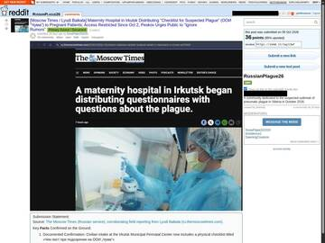
u/SnowFlake202020, Oct 5u/sillygoose2014, Oct 5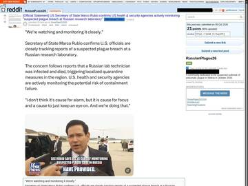
u/SnowFlake202020, Oct 5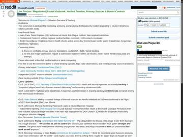
u/SnowFlake202020, Oct 5u/SnowFlake202020, Oct 5u/icanthearyou7, Oct 5u/essex_ludlow, Oct 5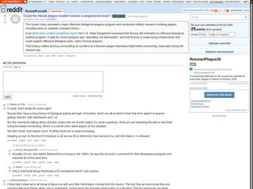
u/Odaudlegur, Oct 5"Moscow airports take temperatures of Irkutsk passengers"
A Chinese military blog says Moscow is screening all passengers arriving from Irkutsk and asks whether this was "another bioweapon leak."
X goes wild: "2,000 quarantined," "St. Petersburg lockdown"
Viral posts claim the leak is "100 times deadlier than COVID," that 2,000+ are in quarantine and that St. Petersburg will lock down "tomorrow." None of this happened.
Russia: "pneumonia of unknown cause," no lab accident
Rospotrebnadzor posts that the worker's diagnosis is pneumonia of unknown cause (不明原因肺炎). Expanded lab tests found no microbe linked to her work, the institute's biosafety committee says no accident happened, and respiratory infections in the region are at normal levels. Russia tells the WHO there are no recent plague cases in the area.
WHO says it is watching. Rubio says Russia "clearly has a responsibility" to explain
- Shelekhov's deputy mayor answers Trump's offer of help: "We'll handle it ourselves. The situation is fully under control."
- The WHO announces it is closely following the death.
- Secretary of State Rubio says the US is following it "hour by hour."
- Former arms-control envoy Marshall Billingslea points out the institute's historical ties to the Soviet bioweapons system.
- Former CDC director Robert Redfield says on NewsNation that if the bacteria had been engineered to resist antibiotics, it would explain why treatment failed. There is no public evidence of that.
Inside the institute and the city: staff on the floor, police on sick leave
- RFE/RL, unnamed sources: claim more than 60 institute staff were isolated, some sleeping on floors and chairs since Oct 2; a relative says no positive test by Oct 3.
- An anonymous institute worker: says staff were swabbed twice a day for three days, and the disinfection at home was "for cockroaches."
- Sergey Bespalov (Facebook): claims police went on leave and sick leave en masse, hospitals closed, and people refused quarantine.
- Gennady Onishchenko (TASS): says it is most likely not plague and won't spread; plague carriers hibernate by early October.
- Microbiologist Alisa Litovka and epidemiologist Mikhail Favorov: say a field infection doesn't fit: Irkutsk and Buryatia are not natural plague areas.
- Rospotrebnadzor, Khanty-Mansiysk: calls reports of plague cases in Surgut and Khanty-Mansiysk fake (Oct 8).
Panic shopping: plague-doctor masks, Camus, rice
- SHOT: claims sales of plague-doctor masks in Russia rose over 500% in a week.
- Chitay-Gorod bookshops (via Ostorozhno Novosti): say sales of Camus's "The Plague" rose 80–86%.
- Daily Star: claims people in China are scrambling for rice, sugar, eggs and canned food over lockdown fears.
Russia stands down; the WHO pushes back
Russia declares it over within a week. The WHO says it still can't judge the risk without the lab data.
Rubio, the CDC, a "second victim," and Shipilova's own antibiotic paper
- u/SnowFlake202020 relays a WHO (Tedros) statement that Russia reported no plague cases and ended contact observation, and that WHO seeks clarification of the cause of death and of media reports of a second employee with pneumonia of undetermined cause. Disputed: u/GedAWizardOfEarthsea says the second death was only seen in Daily Mail
- u/Bright_Business_6681 relays that Trump said he has a call scheduled with Putin about a possible pneumonic plague case in Russia; u/paranoiccritic jokes Trump will say Putin said everything is fine. Disputed: u/Terrible-Junket-3388 notes Russia's no-plague statement conflicts with the earlier governor comments, later recanted
- u/SnowFlake202020 relays a US Embassy Moscow health alert noting awareness of quarantine measures and hospital closures in Irkutsk, possible added regional travel restrictions for US personnel, and 14-day symptom monitoring for anyone who travelled to the area.
- u/SnowFlake202020 relays the first CDC statement saying CDC is monitoring reports of a suspected pneumonic plague case in Irkutsk that resulted in a death. Disputed: u/Terrible-Junket-3388 notes CDC says pneumonic plague explicitly while Russian state media say pneumonia
- u/SnowFlake202020 relays Secretary of State Rubio in Reykjavik saying Russia should share more information and 'maybe there's nothing there, maybe it's bigger than we thought', with the State Department pressing for diagnostic and genomic data.
- u/Bright_Business_6681 relays a 'top scientist' alarm over Russia's plague mystery; mod identifies Dr Kevin Esvelt (MIT) who says a standard BSL-3 wild-type plague accident would mean prophylactic antibiotics, not hazmat fumigation and FSB cordons. Disputed: Mod says Esvelt is pointing out a procedural gap, not pushing panic
- u/SnowFlake202020 relays a Radio Lenta (1557 kHz AM, Lithuania-based exile broadcaster) report, via an X post, that IrkAZ aluminium smelter staff face mandatory masks, Irkutsk and Shelekhov hospitals have strict containment, and locals are buying masks and broad-spectrum antibiotics.
- u/sillygoose2014 (a prepper) shares a post by Marshall Billingslea, former US Assistant Treasury Secretary, as a sign this could be bioengineered and worse than Covid, and asks what to prep. Disputed: Mod only supplied the original tweet link
- u/dailymail (post) claims Russian media say a second victim has died from the plague outbreak at an infection-zone hospital; mod says it traces to a deleted Channel 5 editorial error and a StarHit report of a second employee hospitalised, not dead. Disputed: u/SnowFlake202020 says no verified second death, Channel 5 misread 'a man' and deleted both articles; u/sunshine-owl says it comes from a YouTube comment
- u/Bright_Business_6681 relays an X account (image) said to be accurate that points to an academic paper by Shipilova on antibacterial sensitivity of Yersinia pestis; mod links the Google Scholar entry. Disputed: u/midnight_fisherman says the paper covers wild strains from Siberian natural foci; u/96-62 says the translated text is about repellant and the title is about antibiotic resistance
- u/icanthearyou7 cites a Russian news site saying 60% of people close to the deceased have been tested, and says perhaps all is well. Disputed: u/Annihilator4413 says Russia is propaganda-heavy so the situation may be far worse
- u/96-62 relays that Russia says no plague cases have been detected among contacts of the deceased lab worker. Disputed: u/123Greg123 answers with a Reagan quote about Soviet leaders lying
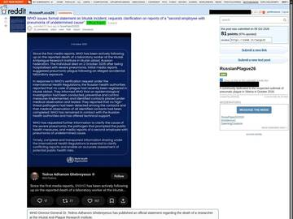
u/SnowFlake202020, Oct 6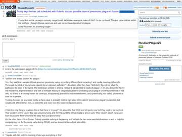
u/Bright_Business_6681, Oct 6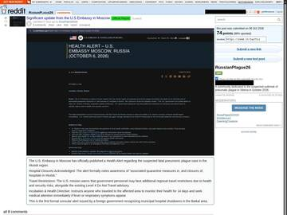
u/SnowFlake202020, Oct 6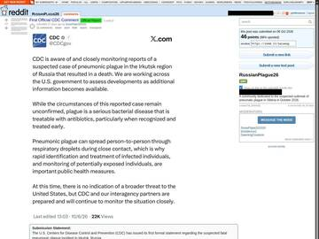
u/SnowFlake202020, Oct 6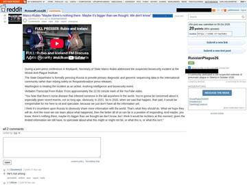
u/SnowFlake202020, Oct 6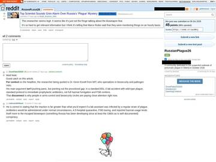
u/Bright_Business_6681, Oct 6u/SnowFlake202020, Oct 6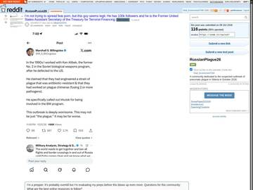
u/sillygoose2014, Oct 6Over 90% of contacts cleared, ~5,000 tests negative; Irkutsk starts lifting measures
Russia says no dangerous pathogen was found in nearly 5,000 tests, reports the case to the WHO under the International Health Regulations, and says the city of Irkutsk is lifting its precautions.
Tedros: can't assess the risk yet
The WHO chief says the WHO has offered Russia technical help on plague and lab safety, but without the full picture it can't do a risk assessment. It asks for the lab results, the reasons for the quarantine, and the contacts' health status.
CDC readies screening at JFK; Trump: "we think not"; Kremlin blames the media
- CDC director Erica Schwartz: the case is unconfirmed and the risk to the US is very low, but the CDC is ready to screen travelers. About 200 flights a year come from Siberia, mostly into JFK.
- Asked if the scientist died from a bioweapon, Trump says "we think not," adding "we'll find out soon."
- Kremlin spokesman Dmitry Peskov says Russia informed the WHO and followed the rules, and accuses the media of spreading false information.
- US officials say the administration is preparing a formal diplomatic note asking Russia for details.
US Embassy notice: "suspected pneumonic plague"
The embassy says it's aware of press reports of suspected pneumonic plague, quarantine measures and hospital closures in Irkutsk, and warns it can do little for US citizens outside Moscow. It is a notice, not an evacuation order. The WHO rates the risk moderate-to-low for Irkutsk, low for Russia.
More neighbours react: Mongolia, Indonesia, Armenia
- Mongolia's health ministry: orders surveillance on the Russian border and rates the risk low. Its zoonotic centre says the Irkutsk institute told it plague was "not confirmed."
- Indonesia: adds health checks for arrivals at resorts popular with Russians (Moscow Times).
- Armenia: PM Pashinyan sets up a commission to keep plague from being brought in from Irkutsk (Oct 8).
Agentstvo: state media put words in WHO's mouth
- Agentstvo: says Rospotrebnadzor, RIA and TASS presented WHO as saying there was no risk. WHO's Christian Lindmeier had called the risk "moderate or low."
- WSJ, CNN and WaPo: report the US sent Russia a formal démarche over how the death was handled.
- Primpress: reports a Russian embassy WeChat post in China urging calm: the patient was vaccinated and nearly 5,000 tests found nothing dangerous.
Chinese dissident media: "bioweapon," "a case in Beijing"
- Li Muyang (YouTube), Oct 5 and 7: titles: "1 dead, 200 isolated, a drill 5 weeks earlier" and "another Russian dead, St Petersburg lockdown?"
- Bannedbook headline: claims a bioweapon leak on the China–Russia border and a defector who leaked the "top secret truth."
- Commentators Chen Pokong and Lin Tinghui: say it may be a bioweapon; Chen claims China helped Russia hide it and Chinese officials disappeared.
- NTD: notes the institute took part in August's China–Russia anti-plague drill: "coincidence?"
- X user Wanjun Xie: claims Russian pneumonic plague reached China and an infected person was found in Beijing.
- Hope Voice TV (YouTube), Oct 8: says the three northeast provinces are rumored to be locking down.
"Antibiotic-resistant" theory, a fake quarantine order, and a defector story
- u/SnowFlake202020 argues the 'chalky tongue' inspection in the Irkutsk maternity plague checklist is a standard Russian plague triage step under SanPiN 3.3686-21 and Russian clinical recommendations. Disputed: u/FeistyInvestment says chalky tongue is not a listed plague symptom in Western sources; u/light_is_a_weapon notes other pathogens whiten the tongue and wonders if a weaponized strain was leaked
- u/TimesandSundayTimes relays Mark Bennetts in The Times saying Russian officials' default to disaster is to deny everything, making Russia's plague denial less reassuring.
- u/scurvey2 claims a video of Annie Jacobsen shows the worst case: a Russian scientist defected saying a bioweapon was made to kill everyone but the Russian army, which her book from two months ago describes. Disputed: u/sunshine-owl says Jacobsen is not a professional and epidemiologists see no need to panic; u/Trophallaxis says the book is catastrophizing but the opening scenario is eerily similar
- u/RlOTGRRRL relays a Telegram post (Novosti Irkutska i Oblasti) saying Rospotrebnadzor called fake a circulating document, 'Order No. 291-K of Oct 5', that would restrict entry and exit, set quarantine posts at boundaries, stations and airports, and repurpose hospitals from Oct 6; Rospotrebnadzor says no such decisions were taken and the situation is calm.
- u/2quickdraw claims Trump 'spilled the beans' that it is antibiotic-resistant pneumonic plague because the Irkutsk lab specialized in weaponizing plague with resistance; u/RobbyZombby adds hospital quarantines grew from 2 to 6. Disputed: u/workplacethrowawayut says plague is endemic there and the victim's own research surveilled wild strains for resistance
- u/sillygoose2014 shares a post by a Moscow Times reporter (image) he says gives extra verification that the Russian government is not credible; commenters read it as Russia having cleared itself. Disputed: u/tahlyn: if true it suggests a natural case, not engineered; u/tymtt: a natural rare infection in a researcher would be a big coincidence; u/captainn_chunk claims the lab worked on chimera strains that turn antibiotics into poison
- u/OrbitalColony relays that the US embassy warned Americans in Russia over the suspected plague case.
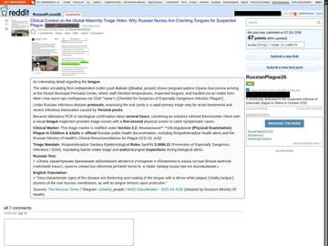
u/SnowFlake202020, Oct 7u/TimesandSundayTimes, Oct 7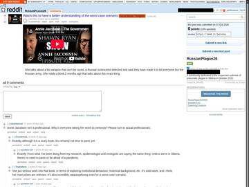
u/scurvey2, Oct 7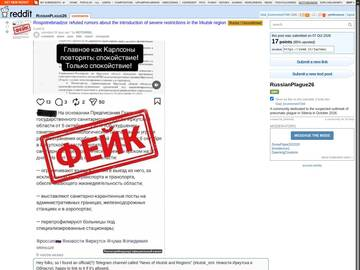
u/RlOTGRRRL, Oct 7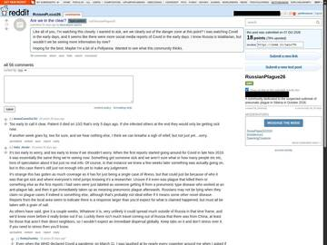
u/2quickdraw, Oct 7u/sillygoose2014, Oct 7u/OrbitalColony, Oct 7All quarantine lifted; Russia denies a second case
Irkutsk governor Igor Kobzev announces in a video that all contacts have finished medical watch and every measure is lifted in Irkutsk and Shelekhov. Rospotrebnadzor denies media reports of a second sick person and says there have been no recent plague cases in the area.
WHO asks again, including about the "second worker"
Tedros posts on X that Russia's information is still incomplete. The WHO asks for test results for the dead worker and contacts, and asks Russia to verify the report of a second lab worker with unexplained pneumonia.
Plague contracts surface; China's markets reopen into a plague-stock rally
Siberian Express finds a 2.6M ₽ contract for the Irkutsk institute to buy two patient isolation boxes for Mongolia, and Saratov's Mikrob institute taking bids for 500 protective suits for Uzbekistan's plague center. Chinese markets reopen after the holiday and "plague concept" stocks jump. Follow the money ↓
Chinese state media mostly quiet; Chinese netizens panic
Overseas Chinese outlets note that Chinese state media barely covered the story while comment sections filled with fear and guesses.
Russia's internet regulator threatens to block plague "fakes"
Roskomnadzor says it has found knowingly false information about the epidemic situation in Irkutsk Oblast. It can order such material removed and block sites that refuse, and reminds media to use only official sources. I found no report of anyone actually fined or blocked yet.
The mother speaks, the plague checklist, and searches that spiked before the accident
- u/SnowFlake202020 claims Chinese stockpiling data show doxycycline prices on Taobao/JD rising from 3 to 14.23 yuan per pack (~374%) Oct 4-7 and that state-run Knews asked whether a second patient had appeared in Russia, while stating no verified border breach exists. Disputed: Poster: this documents anxiety, not transmission; u/sunshine-owl reads it as panic
- u/SnowFlake202020 relays RTE's Jason Corcoran from Shelekhov: a local resident (Alina, 22) says primary schools made masks compulsory and allow absences without penalty, and plants like IrkAZ took precautions, amid no official guidance. Disputed: Regional officials claim daily life is normal
- u/SnowFlake202020 relays AP: WHO's Maria Van Kerkhove said 'We don't understand how she was infected' and that WHO is waiting on unanswered inquiries, while the Russian Embassy in Beijing said notifications were made; post cites ~5,000 tests and 200 personnel detained. Disputed: Russian Embassy in Beijing says proper notifications were made and the situation is contained
- u/SnowFlake202020 relays People of Baikal reporting that a full Irkutsk Perinatal Center intake form headed 'Checklist for suspicion of especially dangerous infection Plague' (dated 5.10.26) is authentic, and that visitor bans were posted at municipal hospitals No. 1, 3, 10, the children's hospital and the regional clinical hospital, with medical university classes halted. Disputed: State-aligned channels claimed earlier screenshots were fabricated (per poster)
- u/sillygoose2014 says Fox News is picking up a potential second plague death; u/RlOTGRRRL says the latest rumor is an unverified Telegram (Nevzorov) report of someone with plague antibodies in Khanty-Mansi Autonomous Okrug. Disputed: u/tje210 says Fox is more disinformation than not; u/RlOTGRRRL's husband argues a real outbreak could not stay off social media
- u/SnowFlake202020 relays Glubina's interview in which Svetlana Shipilova, a physician and Darya's mother, says authorities have not given an official cause of death or death certificate, and that relatives are confined under guard and cannot bury her. Disputed: u/sunshine-owl wonders if the certificate is withheld because cause is still being determined; u/Terrible-Junket-3388 doubts Russia does not know the cause
- u/sunshine-owl relays a YouTube video by an American woman living in Irkutsk who shows normal streets and hospital exteriors, confirms several hospital complexes including a paediatric centre are under quarantine, and says in comments that tests on Darya and others are ongoing. Disputed: u/Fancy_Exchange_9821 predicts claims she filmed under duress; u/Terrible-Junket-3388 says filming implies Russian govt awareness; CNN reports 'residents don't trust officials'
- u/midnight_fisherman posts that Google searches for pneumonia and cough in Irkutsk spiked on Sept 22, days before the supposed lab mishap; adds measles searches spiked at the same time and speculates measles may be hidden or used as distraction. Disputed: u/The_Phantom_Cat notes cough/pneumonia are measles symptoms and labels it non-evidence; u/midnight_fisherman says plague searches only began after the news broke
- u/katxwoods relays Kevin Esvelt, inventor of CRISPR gene drive, commenting on the pneumonic plague outbreak; u/sillygoose2014 says he ordered N95s as a precaution. Disputed: u/sillygoose2014: odds it is nothing
- u/SnowFlake202020 (mod) claims the medical quarantine for suspected pneumonic plague is 6 days, and the '21 days / 3 weeks' figure comes from administrative notices to local health facilities leaked to VK and Telegram; u/ybetchum says he read of a 90-day quarantine. Disputed: u/RlOTGRRRL says the 90 days was likely misinformation; u/ybetchum says he may be mistaken
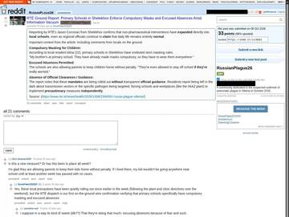
u/SnowFlake202020, Oct 8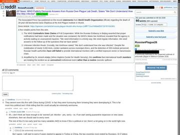
u/SnowFlake202020, Oct 8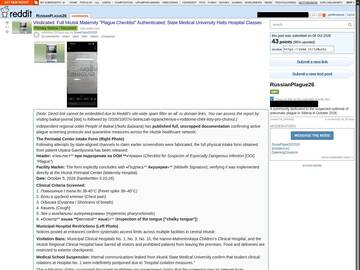
u/SnowFlake202020, Oct 8u/sillygoose2014, Oct 8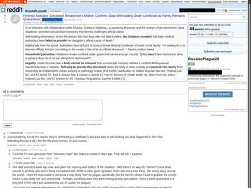
u/SnowFlake202020, Oct 8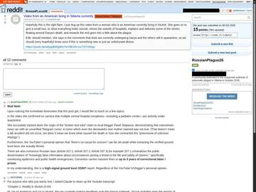
u/sunshine-owl, Oct 8u/midnight_fisherman, Oct 8A new book about a Siberian lab plague; Russia says the investigation is closed
Vision Times points to a recently published novel featuring a Siberian lab, plague bacteria and a bio-accident, and reports Russian authorities have ended their investigation.
China reacts, and the leak appears
Border cities post warnings, Chinese in Russia head home, and anonymous "insiders" claim a cover-up. Officials say there is no plague in China.
Xinhua: Russia denies new cases, measures lifted
China's state news agency runs Russia's line: no second case, situation stable, precautions lifted.
Plague tops Weibo's hot-search list; Oct 8–9 is the peak
- Oct 6: first hot search, "Russian researcher dies of plague, nearly 200 isolated."
- Oct 7: "Russia plague" (around #14).
- Oct 8: seven topics, including the "unbreakable test tube" debate, the dead worker's mother speaking out, and Tedros saying a second person has the pneumonia.
- Oct 9: seven topics, including "Will Russia's pneumonia reach China?" and the pointed "COVID also started as 'pneumonia of unknown cause.'"
US fringe: "another Wuhan," an Israeli vaccine
- Alex Jones Live (Oct 4): claims Russia is covering up a lab leak, "Another Wuhan?", and that antibiotics ran out in the Irkutsk region.
- ZeroHedge, relaying Peter McCullough and Nicolas Hulscher: lists 21+ plague vaccines in development, an Israeli mRNA plague vaccine, and doxycycline survival rates.
- X posts (one account with 1M followers): claim Israel made an mRNA plague vaccine just before the Russian lab tech broke a vial. The Journal FactCheck (Oct 9) calls the claim debunked.
- ZeroHedge: says plague searches and story counts hit COVID-2020 levels.
Quarantine lifted; the moderator says the real all-clear is Oct 23
- u/SnowFlake202020 relays SCMP that Russia lifted the Irkutsk quarantine and cleared ~200 contacts but transparency questions remain, and claims Chinese state TV calling it 'pneumonia of unknown origin' triggered fake border-closure and stockpiling rumors.
- u/SnowFlake202020 argues the real epidemiological all-clear is Oct 23, not Russia's Oct 2-8 quarantine lift, since 2-3 serial intervals from the index patient's last unisolated contact must pass; privately guesses an isolated lab breach covered up out of embarrassment.
- u/SnowFlake202020 relays a CDC statement (via France24 correspondent Fraser Jackson on X) that CDC is monitoring a suspected pneumonic plague case in Irkutsk, calls the case unconfirmed, and sees no indication of a broader threat to the US.
- u/HotPops_ claims Irkutsk live webcams show people going about normally with no more masks or distancing than New York; u/WerewolfEntire reports seeing small fleets of unmarked white vans with tinted windows. Disputed: u/WerewolfEntire says the vans could be anything; u/HotPops_ cautions webcams cannot show everything
Chinese living in Russia rush home; masks sell out; borders tighten
- Reports of many Chinese in Russia packing up and returning; messages about stockpiling food and medicine and city lockdowns spread on Chinese social media.
- The Paper's correspondent in Irkutsk: Chinese residents "bought out" the masks, but no masks were seen in public places.
- Mongolia orders health monitoring on its Russian border; Kazakhstan, Uzbekistan and Kyrgyzstan tighten border health checks.
Hulunbuir (Inner Mongolia) posts a plague risk notice
The Hulunbuir disease control center, on the Russian border, says plague here is unlikely but asks people arriving from plague areas of Russia's Far East to watch their health and tell doctors their travel history. Manzhouli posts a similar notice.
呼伦贝尔市疾控中心 · 鼠疫防控风险提示WHO outbreak notice: a lab exposure "cannot be fully excluded"
- More than 5,500 lab tests on the patient and contacts found no high-consequence pathogen.
- All contacts were watched for 7 days, none fell ill, and observation ended Oct 9.
- Two investigations found no biosafety incident. She had not left Irkutsk Oblast in the two weeks before she fell ill.
- WHO: "A key uncertainty remains the absence of a confirmed diagnosis."
State radio checks pharmacies: more doxycycline buying, no shortage
China National Radio reporters find more pharmacy questions and purchases of doxycycline, with prices for the same product tens of yuan apart between shops, but no general price spike or shortage. Hunan CDC's notice the same evening adds the slogan "don't believe rumors, don't spread rumors." The "doxycycline up 5x in 3 days" claim comes only from posts and NTD, with no data.
央广财经调查："鼠疫传闻"影响几何 · 科学预防不信谣不传谣X posts: "3 plague cases from Russia in Henan, doctors told to write 'pneumonia'"
X accounts "Wanjun Xie" and "新聞調查" claim three pneumonic plague cases from Russia in Henan, with staff ordered not to write "plague" in the records. NTD runs it Oct 10. Henan has not replied, and nobody has backed it up.
病歷不准寫『鼠疫』，改寫『不明原因肺炎』X and Threads: a hidden Shanghai case, a 12-year-old, Russians "flooding" Sanya
- X user Wanjun Xie: claims a Shanghai case is being hidden and panicked Russians are flying to China visa-free.
- X user 海外爆料: claims Mongolia and Kazakhstan closed up while China has no screening, a 12-year-old is a confirmed case, and Beijing will lock down if it spreads.
- Threads user @mitsuolaird: claims Henan has 3 confirmed "Russian plague" cases and Russians are flooding northeast China, Sanya, Beijing, Shanghai, Guangzhou and Shenzhen.
- A YouTube video ("50/50 true"): claims masks were shipped from China to Irkutsk, students confirm the outbreak, Sanya and the northeast are full of Russians and border customs are unguarded.
- Kanzhongguo: says unverified videos show long queues at border crossings as Chinese in Russia head home.
"Tubes don't break," WHO DON620, and weaponised-plague videos
- u/SnowFlake202020 relays WHO DON620: WHO has not identified evidence of ongoing transmission, but confidence is limited by the absence of a confirmed etiological diagnosis and uncertainty on source and mode of exposure; adds that Russia ended the quarantine without giving the pathogen. Disputed: u/TorrentialSilence (comment) claims Russia already diverted antibiotics into state strategic stockpiles since 2020, so purchases would not show; u/sunshine-owl says WHO would see stockpiling
- u/Isildil claims no test tube broke because such tubes are unbreakable and only an incident is known, and that Shipilova's mother, a health-care worker, is angry the government has not released the body or given a cause. Disputed: u/Actual-Promotion-862 says the mother would have said it if plague killed her
- u/ParticularRegion3097 relays a Dr John Campbell video on weaponised plague and recommends him. Disputed: u/Jungies says his PhD is in training not medicine; u/WhenSummerIsGone says he lost credibility during COVID
WHO: no evidence of sustained spread; public risk low
The WHO's update says there is no evidence of ongoing transmission and rates the public health risk as low. Taiwan's CDC steps up fever screening at airports and ports.
The leak: "P4 lab worker" and "hospital insider" posts
An X account named "罗翔" (@LUOXIANGF) posts two anonymous submissions:
- P4 lab: two plague patients caught at the Russian border were treated, released, and died five days after flying home to Shanghai and Chongqing.
- Erenhot hospital: 70+ plague patients, 40+ dead, bodies cremated before families were told, 3 doctors dead, and "thousands of cases" in Hohhot, Chifeng, Tongliao and Baotou.
The Erenhot "70+ admitted, 40+ dead" post, translated
- u/SnowFlake202020 posts an English translation of a viral Chinese post by a self-described insider at the Erlianhot (Erenhot) medical college hospital claiming 70+ plague patients admitted, 40+ dead and cremated, 3 doctors dead, thousands of cases in Hohhot, Chifeng, Tongliao and Baotou, antibiotics sold out and a gag order, marking all numbers unverified. Disputed: u/sunshine-owl says it looks like fearmongering: no Erenhot medical school exists, poster only insults others, and Mongolian commenters from the region say it is false; claims the computer image may be copypasta; u/Micro_Tyrannus could not find the image by reverse search
Vision Times: "Plague suspected in several Inner Mongolia cities, news blocked"
Secretchina.com runs the Erenhot hospital claim as a news story under its "Mainland politics" section.
Hong Kong and Macau step up checks on arrivals from Russia
Hong Kong's Centre for Health Protection adds temperature checks on flights from Russia, asks travellers who were in Irkutsk Oblast in the past 14 days to declare it, and sends anyone with pneumonia symptoms to a public hospital. It says no traveller from Russia with pneumonia of unknown cause has been reported. Macau announces similar border screening and travel-history declarations.
Fact-checkers: the "Mongolia declares plague alert" video is false
Taiwan FactCheck Center (report #4353) and MyGoPen rate it false. The clip is Mongolia's Deputy PM N. Nomtoibayar at an emergency-commission meeting (Oct 6 or 7), not the health minister. He asked for preparedness plans but declared no alert and closed no border. Mongolia keeps its risk at "low." Bilibili uploads with the same mistaken subtitles spread it in China, one with 87,000 views.
蒙古未發布肺鼠疫公衛警報及管制邊境Wang Yi meets Putin aide Patrushev in Beijing; plague isn't mentioned
Nikolai Patrushev visits China Oct 8–13. The Foreign Ministry readout covers maritime, Arctic and "Ice Silk Road" cooperation and Xi–Putin greetings, with no word on health or plague. China's last public line is still Oct 6: the two countries "keep close cooperation" on diseases "including plague." No plague question appears in the Oct 12–13 briefings either.
Tencent column: rumors "spread like the real thing," rebuttals nobody reads
A mainland column lists six rumors going round WeChat Moments, among them a lab leak, many deaths, closed border crossings, forced quarantine for travelers to China and a "plague health code." So the health-code rumor circulated inside China too, not only on X.
俄罗斯鼠疫谣言传疯了，官方辟谣没人看"Inner Mongolia officials deny it" — but no one is named
SETN reports that Inner Mongolia officials insisted no hospital there ever treated a plague patient. LTN, NTD and Mirror Daily repeat it. None of them names an agency, a date or a quote, and no original statement can be found. The leak itself says the hospital "tells outsiders it never treated plague patients," so the "denial" may be the leak's own words recycled. That last point is my read, not proven.
轄內醫院從未收治過任何鼠疫患者AI fake: "four Ufa residents back from Irkutsk with plague"
A Telegram channel posing as Bashkortostan's acting prime minister Alexander Sheldyaev (one letter off his real channel) posts an AI-made report and a "quarantine for arrivals from Irkutsk." A Bashkir fact-check channel and Lenta.ru expose it: there is no plague in Bashkortostan.
The Chinese-language debunks
- RT Chinese: lists six "rumors" as false: plague, a leak, a lockdown, a second case, neighbours closing ports, forced quarantine of arrivals to China.
- Sina and RT Chinese writers: call it a "traffic frenzy"; antibiotics would be enough.
- MyGoPen (Taiwan fact-check): says the claim that Mongolia officially announced pneumonic plague in Russia twists what Mongolia's deputy PM said.
- Writer Fink (Substack): says some "China tells families to stockpile" headlines recycle a Nov 2021 Commerce Ministry notice.
Hong Kong checks, China's border, and the Fuyuan plague drill
- u/SnowFlake202020 relays a Hong Kong CHP Oct 12 release assessing local risk as Low, with airport temperature checks for Russia flights and a request that anyone who visited Irkutsk Oblast in the past 14 days declare it; says posts claiming Hong Kong declared its highest emergency level are wrong. Disputed: u/Hioneqpls notes no videos of street chaos like early COVID; mod says the timeline compresses in hindsight
- u/SnowFlake202020 relays The Telegraph reporting that China stepped up border security and inter-agency coordination in northeastern regions after the Irkutsk lab incident, aligning with Hulunbuir CDC alerts for arrivals from the Russian Far East. Disputed: Poster: defensive posturing, not confirmed cases
- u/ManukaBadger86 relays a report that China and Russia held a plague drill weeks before a viral post warned of a possible lockdown near the border; mod adds it was a joint Aug 24-27 exercise in Fuyuan with 300+ personnel including a tick-borne 'Disease X' scenario. Disputed: u/Physical_Pattern5089 says joint exercises are not uncommon; u/ManukaBadger86 himself notes the Wuhan lab took part in one before COVID
Hulunbuir: "no plague here," notice deleted
Asked by Jiefang Daily / Shanghai Observer, the Hulunbuir health commission says there is no plague in the area, the notice was routine health education, and it has been deleted to avoid misunderstanding. Hulunbuir has had no human plague case since 1927.
North China Pharma's rally ends in a limit-down
After three straight limit-ups (+33%), North China Pharmaceutical falls the daily maximum −9.95% on ¥1.3B of trading. It had warned the night before of "market speculation risk."
Taiwan's legislature: "highly, highly concerned," but no positive tests
- Lawmaker Wang Ting-yu asks about rumors that several Chinese provinces are hit, and claims that posts about plague cases in Sichuan were removed.
- Premier Cho Jung-tai: the government is "highly, highly concerned," has had border quarantine in place for about two weeks and is watching Chinese online reports.
- Health Minister Shih Chung-liang: Taiwan asked the WHO; "no tests of pathogens or other samples have returned positive results," so plague can't be confirmed.
- Mainland Affairs Council Minister Chiu Chui-cheng: will keep Taiwanese business people in China informed.
"Plague in Beijing" posts are 2019 cases, recycled
Posts saying the Beijing Health Commission reported two pneumonic plague cases are old news: the two patients came from Sunite Left Banner (Inner Mongolia) and were treated in Beijing's Chaoyang District in November 2019. Contacts were watched for nine days and nobody else fell ill.
Irkutsk government: "plague quarantine" document is fake
A document saying the region is bringing in a plague quarantine circulates online. The Irkutsk Oblast government calls it false: "Information about a quarantine in Irkutsk Oblast due to plague does not correspond to reality."
Информация о введении карантина в Иркутской области из-за угрозы распространения чумы не соответствует действительностиSouth Korea keeps its risk at "low"
The KDCA situation meeting keeps the overall risk "low" (first set Oct 7), steps up checks on arrivals from Russia with fever or breathing symptoms, sends suspected cases to designated isolation beds, and says a national antibiotic stockpile is ready.
Epoch Times "insider": a secret Oct 5 order
- An anonymous Party insider (Epoch Times): claims the National Health Commission sent an internal notice on Oct 5 ordering strict plague control and a Level III/IV response.
- Same insider: claims 300–500 m lockdown zones around incidents, sealed villages, and unannounced remote temperature checks at the border.
- Commentators Heng He and Cheng Yuan-yu: say sporadic cases may exist and local governments must keep them quiet.
- Taiwan's Mainland Affairs Council minister Chiu Chui-cheng: answers reports that posts about pneumonic plague cases in Sichuan were removed: China is "always opaque."
Trains still run; an Uzbek "plague antigen" lab report
- u/SnowFlake202020 relays a Macau Health Bureau statement that risk to Macao is low, citing WHO info that no plague cases were found, and listing strengthened port-control measures. Disputed: u/Mclovingtjuk says these are routine worst-case protocols; u/Delyrichodvain asks why measures follow if independent news says Russia is normal
- u/SnowFlake202020 claims China Railway 12306 ticketing for Oct 15 shows rail lines from Manzhouli, Hailar, Heihe, Suifenhe, Wulanchabu and Hohhot all open, so no travel lockdown at those transit zones, while allowing an incubation-window caveat. Disputed: Poster: this does not prove transmission is not occurring
- u/WerewolfEntire relays Taipei Times: Taiwan's premier said Taiwan is monitoring rumors that pneumonic plague has spread from Russia into several Chinese provinces and could enhance quarantine measures. Disputed: u/Quick-Character744 says it would be odd for spread to skip Mongolia, which would notify WHO
- u/SnowFlake202020 relays a Hong Kong CHP letter requiring doctors to report and isolate any fever/respiratory patient who visited Irkutsk Oblast in the past 14 days. Disputed: u/a_duck_in_past_life calls it normal protocol; u/sunshine-owl says it follows Douyin rumors
- u/RlOTGRRRL claims Russian social media last week showed a lab report with plague antigens for a man from Uzbekistan far from Irkutsk, plus a Buryatia plague-squirrel rumor, unverified whether fake. Disputed: u/RawCookieDough12 says independent plague cases get amplified; u/sunshine-owl says a 'plague in California' scare was a year-old article
- u/sunshine-owl shares an epidemiologist's article (via Threads) concluding the cause of Shipilova's death is unknown and that stories including bioweapon claims have holes. Disputed: u/oof37 notes multiple countries announcing measures back to back and a Trump remark
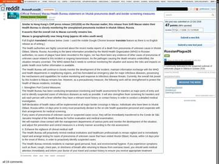
u/SnowFlake202020, Oct 13u/SnowFlake202020, Oct 13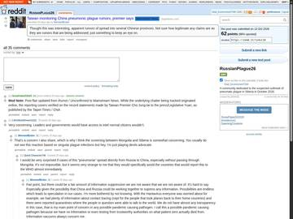
u/WerewolfEntire, Oct 13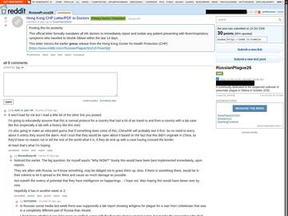
u/SnowFlake202020, Oct 13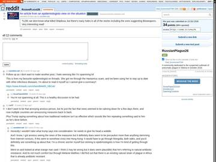
u/sunshine-owl, Oct 13Vision Times publishes the P4 leak; prophecy videos spread
Secretchina.com runs "Rumored plague deaths in Shanghai and Chongqing — leaker: we are panicking," and a prophecy video claiming "350 million will fall like leaves" and a US embassy evacuation alert. I haven't seen that alert in any other source.
Taiwan's Newtalk relays new X claims: "10+ dead in Irkutsk," a secret criminal probe
Newtalk collects posts from X accounts and says none of them are confirmed:
- X user 黃中財: Irkutsk Oblast may have more than 10 pneumonic plague deaths, and senior Russian officials have secretly opened a criminal case. He also claims suspected patients in Guangdong and Hunan.
- X user 羅翔: Xining's (Qinghai) CDC posted a notice urging vigilance. It names no disease and reports no cases.
- X user 揮手憶當年: posts claim Inner Mongolia started quarantines and COVID-style health codes; tells people to stock masks and dry food.
Oct 14's storm is outside the wall; Weibo goes quiet
The Hulunbuir deletion story makes Weibo's hot list on Oct 13 and Sina's hourly health list at 22:00 and midnight. After that, no plague topic appears on Weibo's hot list on Oct 14, 15 or 16. Oct 14's flood comes from Taiwan and overseas Chinese outlets (Newtalk, LTN, Vision Times, NTD, Epoch Times) re-running the X leaks. Whether mainland interest faded or was held down, I can't tell. I found no police case against "plague rumor spreaders."
#呼伦贝尔卫健委回应发鼠疫提示后删除#Hong Kong mask sales double; "fleeing Chinese" border videos
A Tsuen Wan shop's mask sales more than double on Oct 9–10, with one customer buying 17 boxes; a local brand reported +700% on Oct 7. There's no solid sign of mask runs in the mainland. Videos of crowds at Heihe and other China–Russia crossings, captioned "Chinese fleeing the plague," have no date, place or uploader.
Xinhua reports plague in Madagascar; rumor sites fold it in
Xinhua and People's Daily report Madagascar's 4 confirmed and 5 suspected plague cases, part of its usual season. On Oct 15 overseas sites mix the story into "China in panic" articles. It has nothing to do with Russia.
Washington voices: "something worse," "engineered?"
- Dr Amesh Adalja (Newsmax, Oct 11): says the response makes him think it was "something worse than plague" and the Soviet bioweapons program "we think has resumed."
- Jamestown Foundation: says director Balakhonov took part in the Aug 2026 Fuyuan drill with PLA Northern Theater disease units; Irkutsk co-wrote a 2008 plague-genetics study with a PLA-linked Beijing lab; Ken Alibek alleges Soviet weapons-research money.
- Sen. Rand Paul (via NTD): says Russia likely sequenced the pathogen, and the lockdowns suggest antibiotics weren't working, so the strain may be engineered, or not plague.
- Rutgers' Richard Ebright (via NTD): says a vaccinated, treated researcher dying would suggest a resistant strain.
- Robert Redfield (Daily Star, Oct 15): suspects a Kremlin bioweapons link and a resistant or modified strain; "skeptical it's plague."
Substacks and fringe: 40 cremated in Mongolia, a CIA plot
- The Collapse Experiment (Substack): claims a Mongolian hospital took 70 patients, 40 died and were cremated, 10 doctors infected and 4 died, and grass fires were set on the border to stop spread.
- Same Substack: claims a Hunan P4 lab technician said there are plague patients in China, a businessman flew Irkutsk to Beijing unmasked on Oct 11, and the strain "looked modified."
- Chiang Rai Times: counts at least eight Chinese plague drills and says observers think officials had classified intelligence of a new threat.
- The People's Voice (Oct 15): claims Russia blames the CIA, WHO and Bill Gates for engineering the "Russian plague" to push lockdowns and mRNA vaccines.
Korea, Taiwan and France weigh in; "stock food"
- u/SnowFlake202020 relays that South Korea's KDCA held a rapid risk assessment on Oct 7 rating the chance of an outbreak entering Korea 'very low' and impact 'low', based on Moscow's account that exposure was confined to the institute and hospital. Disputed: Poster doubts Moscow's narrative ('LOL wild amount of trust')
- u/SnowFlake202020 relays TRT World (Turkey) reporting that Taiwan's Premier Cho Jung-tai said Taiwan will keep monitoring online rumors that pneumonic plague spread from Russia into China, and Health Minister Shih Chung-liang said Taiwan asked WHO to verify the autopsy and cause of death.
- u/SnowFlake202020 relays an Inserm (France) Oct 12 brief saying Russian facilities were quarantined and contacts surveilled, that tests reportedly excluded Y. pestis but diagnostics can be unreliable for panel-negative pneumonia, and calls Europe's messaging 'communication dampening'. Disputed: Poster notes the release mentions no French measures
- u/According_Tour_9079 claims Asian governments conceal all information and that in China cities are sealed leaving people at home without timely food or medicine, so those in Asia should stock food and medicine. Disputed: u/Mysterious_Radio_190 says every government conceals at first (Three Mile Island); mod says do not worry unless OSINT is loud
Manzhouli's plague notice is gone too
Vision Times reports that a netizen found Manzhouli CDC's plague notice deleted, like Hulunbuir's. It had listed cross-border "pneumonia of unknown cause" as a key risk. An earlier RFA interview (Oct 12) quotes an Inner Mongolian living in Japan who thinks the warnings came on orders from higher up, and a Shandong resident who says WeChat group posts about the Russian plague were being deleted.
Yakutia: fake plague order emailed to hospitals
Hospitals and clinics in Yakutia get an email, sent from a fake address made to look official, ordering extra anti-epidemic measures against imported plague. Yakutia's Rospotrebnadzor says on Telegram the document "is not official," its contents are unreliable, and the situation in the republic is calm. Medical institutions in Yakutia and Primorye had already posted tenders for anti-plague suits on Oct 9.
The anti-plague institute buys cameras to watch its staff
The Irkutsk institute tenders a ₽1.16M CCTV system: 10 outdoor cameras, round-the-clock recording kept 30+ days, a monitor at the guard post, to catch "illegal entry" and reduce "theft risks." It comes on top of the ₽2.5M isolation-box tender. Its ₽13.15M plague conference with delegates from Beijing and Ulaanbaatar is still set for Oct 21–22.
В Иркутском противочумном институте после смерти сотрудницы будут по камерам следить за персоналомNew rumor numbers, no new leak details
- A ganjingworld video shared on X claims "470 positive, 149,700 locked down, 6,400 foreigners escaped" in Russia. It names no city, source or document.
- @LUOXIANGF's only follow-up ties the death to a plague rumor from the Donbas front, and admits "there is no solid evidence they are connected." No new Erenhot or P4 details.
- The P4 "lab worker" calls plague a "virus" (it's a bacterium), a red flag. NTD still lists all the China claims as "awaiting verification."
Experts: no sign of spread, but Russia still owes answers
- Amesh Adalja (Johns Hopkins): pandemic potential shows up as a growing human-to-human chain, "and that is not what we're seeing." Hayley Severance (NTI): "we are flying in the dark."
- Gigi Gronvall (Johns Hopkins), in The Moscow Times: Russia should say which pathogens it tested for and what came back.
- Judy Twigg (Think Global Health): the inquiries are unnamed and unpublished. Governor Kobzev on Oct 8: "It was a test, but we passed it with dignity."
- Yanzhong Huang (CFR): "No official Chinese announcements have confirmed related cases in the Northeast, Shanghai, or Chongqing."
Is Madagascar's plague connected?
- u/Infamous-Emphasis501 asks whether the Madagascar plague cases are connected to Irkutsk. Disputed: u/SnowFlake202020 (mod) says Madagascar's season is annual, endemic, with no epidemiological or genomic link; u/sunshine-owl says endemic
The "350 million dead" prophecy video is Brandon Biggs
The prophecy clip is US preacher Brandon Biggs, who in an older video predicted a lab-made rodent pathogen, 350 million deaths and lockdowns by year's end. Newtalk notes his earlier predictions (a Paris 2024 attack, 2025 inauguration attacks) didn't happen.
ECDC: still not enough to judge the risk
The EU's disease agency repeats Russia's answer to WHO: no plague case in Irkutsk Oblast, contacts tested and released with no high-threat pathogen, and no biosafety or biosecurity incident at the lab. It still lists the death as "pneumonia of unknown aetiology" and says the information "is not sufficient to draw a firm conclusion regarding the potential risk to the EU population."
Commentators on Epoch Times and NTD: a modified strain?
- Heng He: says Russia's federal level suppressed the early broken-tube reports, and speculates about a modified, antibiotic-resistant Soviet strain.
- Lin Xiaoxu: says the real problem is the cause of death isn't public, and notes the Fuyuan drill with the institute's director a month before.
- Canadian TCM professor Jonathan Liu: accuses Russia of hiding information on purpose and points to the institute's bioweapon history.
- A Shanghai resident, "Mr Wang": says WeChat is full of plague messages and he thinks it came from a Russian bioweapon leak.
- Lyudi Baikala (Oct 16): says the dead worker's dachshund is fine; readers had feared it was put down.
Flights normal, Hong Kong ER waits spike
- u/Micro_Tyrannus claims flights to and from Irkutsk, including to Beijing, were still operating normally on Flightradar24, and u/SnowFlake202020 agrees Russia looks operationally normal.
- u/SnowFlake202020 (mod) claims Hong Kong A&E wait times peaked at 8 to 13.5 hours overnight Oct 15-16 but bled off, which he says passes his Friday-night test, while noting airport screening under CHP's Irkutsk 14-day lookback sends suspected cases to Princess Margaret Hospital. Disputed: u/PersonalAddition9262 says nearly every Hong Kong hospital spiked and Saturday waits stay at 5 to 8+ hours, so the bleed-off is not clear
Chengdu: "a man back from Russia died," CDC says it's not plague
A Shuangliu (Chengdu) resident, under a made-up name, tells Epoch Times a fever-clinic doctor said on Oct 11 that someone back from Russia had died, "possibly something to do with plague." A Shuangliu CDC staffer confirms they are calling people about fevers, but says "it has nothing to do with plague," and that any plague case would be a work secret. No patient, doctor, record or notice is named. Another source says police warned her after she talked about it. NTD repeats the story on Oct 17.
你说的这个情况，我们疾控中心确实是在调查，但是和鼠疫没关系。NTD: cases in six provinces, a police warning, Vietnam turning people away
- Sichuan netizen "Chen Sihan" (pseudonym, NTD): claims plague-related cases in Inner Mongolia, Tibet, Gansu, Zhangzhou (Fujian), Shanghai and Beijing, and deaths in Chongqing after travel abroad.
- Same person: says she got a police warning after a private chat about it: "all software is monitored."
- "Mr Ruan" in Vietnam (NTD): says Russian friends tell him Vietnam tightened screening and is refusing entry to people from parts of Russia.
Quiet on both sides of the border
- Russia: no plague posts Oct 16–18 on Irkutsk channels (Lyudi Baikala, SOTA, IrCity, IRK.ru) or on Baza, Mash, Meduza and Novaya Gazeta. No new statement from Rospotrebnadzor. The institute's conference is still set for Oct 21–22.
- China, state media: nothing new from Xinhua, People's Daily or Global Times since Oct 14.
- China, social: no plague topic on Weibo's hot list on Oct 17 or 18.
- Overseas Chinese media: NTD's Oct 17 weekly roundup re-runs the Erenhot, Henan and Shanghai/Chongqing claims, says they "lack independent evidence," and adds nothing new.
Ukraine: risk "very low," no special measures
Ukraine's Public Health Center, under the health ministry, tells LIGA.net it rates the risk to Ukraine as "very low." It plans no special preventive measures and bought no extra medicine. It notes the pneumonic plague case has not been confirmed by independent or international sources.
Politico: the case shows the limits of the world's health rules
Academics and EU lawmakers tell Politico the death exposes a weak spot in the International Health Regulations: a country is meant to report events like this to WHO, but nothing forces it to share details. WHO first heard of the death from the media.
Voronezh: fake "tenth plague death in Russia"
Regional Telegram channels in Voronezh Oblast claim Russia has recorded a tenth plague death and hospitals are bringing in quarantine. The regional "War on Fakes" channel calls it false and a bid to stir panic. Local outlets warn the links in such posts can lead to phishing sites. No health agency reports any plague death.
A Taiwanese commentator: bioweapon "very unlikely"
- Commentator Xie Hanbing (on.cc): says bioweapon use is very unlikely and that WHO reportedly said it was likely not pneumonic plague.
- Hong Kong residents (on.cc): say they are wearing and stocking masks.
The institute's plague conference is pushed to November
On the day it was meant to open, the CIS plague conference the Irkutsk institute co-hosts is moved from Oct 21–22 to Nov 11–12, by Rospotrebnadzor order No. 832 of Oct 21. Neither the institute nor the conference site gives a reason. The ₽13M budget (BBC Russian found the contract) covers guest flights, visas, insurance, Chinese translation, a Baikal trip, a gala dinner and press coverage.
Reddit trackers: Hong Kong hospital waits, "white lung" searches
- Reddit u/ten-squared (Oct 21): posts an article quoting an insider: "plague cases have already appeared in some parts of China and a pandemic is possible."
- Reddit u/Dako58 (Oct 22): claims Hong Kong A&E wait times show long daily spikes that point to many severe cases, and repeats a rumor of "black fluid" in Shipilova's lungs.
- Reddit u/cortadito_ (Oct 24): posts a "China Observer" video claiming a variant spreading in China with severe stiff neck, sore throat and heart inflammation.
- Reddit u/Dako58 (Oct 26): claims Google searches in Hong Kong for "white lung" (白肺) broke out over 5,000%, along with "death certificate," "remains" and "crematorium."
Epoch Times' China CDC insider
- u/ten-squared relays an Epoch Times report that an insider in China's disease control sector says plague cases have already appeared in parts of China, that a regional CDC called plague information confidential, and a pandemic is possible. Disputed: u/escapefromburlington and u/Duke_Of_Halifax dismiss Epoch Times as far-right; u/Quick-Character744 says Mongolia would have notified WHO first and no outbreak signs are seen; u/sunshine-owl says the article has no proof and 'Dr Feng' has made other doomer claims
Two odd Hainan items
- Zerkalo.io (Belarus): reports a Belarusian citizen died in Hainan; no cause given.
- Weibo hot search, Oct 22: a child's watch lost in Sanya turned up in Russia (#31 on the list).
Deleted posts and other names for it
- u/Affectionate-Stay430 claims social media near the original death site shows posts being deleted and authorities using names other than plague, matching the Epoch Times report. Disputed: u/revan12281996 notes the cited source appeared after the post; u/Quick-Character744 says a natural plague R0 is too low for the claimed epidemic and the health system collapse would be hard to hide
- u/Jolly_Treacle_9812 claims Epoch Times was early to report COVID in 2020 so it likely found something real here, and u/96-62 notes the source is an unnamed person inside China CDC. Disputed: u/LatrodectusGeometric says Epoch did not report first on COVID; u/Quick-Character744 says early COVID reports came via social media
A "variant" with stiff necks and heart inflammation
- u/cortadito_ relays a China Observer YouTube video claiming a variant is spreading in China causing severe stiff neck, sore throat and heart inflammation, citing a 'Dr Feng', and asks if it is something other than COVID. Disputed: Poster says China Observer looks alarmist; u/flowerchildmime and u/cortadito_ think symptoms sound like meningitis; u/Micro_Tyrannus says symptoms do not match plague
"White lung" and death-certificate searches
- u/Dako58 claims Google Trends spikes for 'death certificate' and 'white lung' (白肺) in Hong Kong and for death-certificate/relative-died terms in Bangkok, both peaking Oct 11, show a novel respiratory virus has reached both places. Disputed: u/Micro_Tyrannus and u/Quick-Character744 ask why no country has reported or sequenced a virus; u/sunshine-owl calls it 'another level of delusion'; u/Quick-Character744 says an COVID-like R0 from a Sept 27 start would already mean tens of thousands of cases
- u/Dako58 claims hospitals only test flu/COVID/RSV, label negatives 'pneumonia of unknown etiology', and that Thai and HK authorities are 'narratively managing' a novel virus by blaming flu or dengue. Disputed: u/Quick-Character744: no sequenced case or international exports reported; a bioweapon needs protection for its maker
Lyudi Baikala: FSB and police were at the family's door first
The anonymous Lyudi Baikala reporter who went to Darya Shipilova's building answers readers who told the outlet to leave the family alone. She writes that medics in anti-plague suits took the grieving relatives to forced quarantine the day after the death, with FSB officers along, and that police began questioning them at once. None of them has told the public what they learned. On the first visit the flat was empty; the reporter spoke only to neighbours.
The moderator: a lab mistake and a cover-up
- u/SnowFlake202020 (mod) claims the Irkutsk event was likely a Russian lab mistake followed by a cover-up out of embarrassment and fear of international inspection, and says no news is good news. Disputed: u/Quick-Character744 criticises the sub for allowing unsupported theories
Chinese chatter turns from plague to quarantines
- u/Affectionate-Stay430 claims Chinese social media chatter has shifted from plague to suspicion that something happened since people were quarantined, with some northern China posts urging food stockpiling but no new evidence. Disputed: u/Quick-Character744 and u/j-bird696969 say there is no additional evidence of an outbreak; u/Micro_Tyrannus says Baikal People Telegram looks normal
The Sanya hotel post lands on Reddit
- u/Micro_Tyrannus relays an X post (by the account that earlier claimed Inner Mongolia outbreaks) alleging a Sanya hotel was locked down because a Russian brought plague, and asks if it has any credence, noting he believes the account has posted lies before. Disputed: u/SnowFlake202020 (mod) says the account is known for unfounded claims and the hotel was still bookable online; u/midnight_fisherman and u/sunshine-owl say they could still book via booking.com; u/sunshine-owl says the chat screenshots never mention plague and read like COVID-era hotel notices
- u/sunshine-owl claims the screenshots in the Sanya hotel post are from a Poly Tianjun Phase II construction site notice about chikungunya/mosquito illness, not plague, and that the only Russia link is the account's own assertion that Sanya is popular with Russians. Disputed: Disputes @LUOXIANGF plague/Russian claim
WSJ: WHO asked five times, the lab had years of safety warnings, the army paid for upgrades
- WHO: asked Russia five times for more on the death and got no detailed answer, only "pneumonia of unknown origin." Russia sent data on the contacts and the lab checks but never named the pathogen. WHO says it can't fully rule out a lab infection.
- Inspections: June 2026, the Emergencies Ministry (MChS) found no plan to disinfect buildings and equipment after an accident and no stock of disinfectants. September 2026, MChS said the civil-defence plan was out of date. 2019, missing safety papers for biohazard sites. 2015, a warning over missing fire alarms.
- Defence Ministry: procurement records show it helped fund a lab upgrade and new equipment for the institute in 2025.
- History: founded 1934; in the Cold War one of its heads helped build the Soviet biodefence programme, later a cover for offensive work including plague.
"The dengue story is a cover" vs. China CDC's one plague death
- u/Dako58 claims the 72-hour confinement of workers with police is inconsistent with dengue and that the dengue explanation is a cover story, saying swabs plus blood tests suggest a respiratory virus. Disputed: u/sunshine-owl says China routinely quarantines mosquito-borne clusters; u/Quick-Character744 cites Guardian 2025 chikungunya control measures article; u/Micro_Tyrannus notes nucleic acid testing also detects dengue
- u/Micro_Tyrannus posts more material on the rumored Sanya dengue lockdowns, saying he does not think it is connected but posts it in case. Disputed: u/96-62 says it is far from Irkutsk and unknown; u/sunshine-owl translated a photo as saying rooms are disinfected and pesticide sprayed
- u/Quick-Character744 claims China CDC's September report lists one plague case and one plague death with no type, date or location given. Disputed: u/Quick-Character744 and u/sunshine-owl themselves say plague is endemic in China and Mongolia and this probably is unrelated to Russia; poster says 14 cases since 2020
Still no cause of death; Weibo quiet
- Russia: a month on, no official cause beyond "community-acquired pneumonia" / "pneumonia of unknown aetiology." Searches of IrCity, IRK.ru, Baza, Mash and Meduza on Telegram find no new plague posts since Oct 17.
- China, social: no plague topic on Weibo's hot list on any day Oct 19–31.
Blood draws and 9-day isolation: dengue or something else?
- u/Dako58 claims blood tests plus swabs, 9-day confinement and police guarding in Sanya look like a viral lockdown, not dengue, citing a Sanya health commission page. Disputed: u/sunshine-owl: dengue is blood-borne so tests make sense; u/Quick-Character744: RT-PCR is the gold standard for dengue detection
- u/Micro_Tyrannus asks what the sub thinks of rumored dengue quarantines in China, saying he thinks it is likely unrelated but worrying. Disputed: u/j-bird696969: nothing connects them; u/Apprehensive_Row_161: no sequencing data shows the Russian event was even plague
- u/Quick-Character744 relays a Beijing News report (Oct 31) that Sanya residents saw suspected dengue-risk workers collectively housed in their complex, and argues China would not handle plague contacts this way. Disputed: u/Dako58 says Beijing News wording 'transferred out' rather than 'released' leaves open where workers went
The army will pay ₽2.18 billion to rebuild the institute
- Lyudi Baikala: says the institute's building will be rebuilt with ₽2.18 billion of Defence Ministry money, after the ministry also bought its equipment.
- Microbiologist Alisa Litovka (via Moscow Times): says Russia's health authorities "very actively hide" the facts from WHO.
"A mass-fatality event is coming"
- u/jayaregee83 says social media is circulating claims of a leak of a deadly pathogen in Russia causing hospital shutdowns, an upcoming mass-fatality event in Russia, and several countries advising citizens to stock up, and asks if others hear the same, without asserting they are true. Disputed: u/Takatotyme says a real Russian pandemic would already have affected other countries and calls the mass-fatality claim 'crystal ball shit'
Sanya: dengue, or plague?
In late October building sites, a worker camp and a hotel in Sanya's Jiyang District were sealed. Officials say dengue and chikungunya. Posts say a Russian brought in plague. Every claim is listed as who says it, with links and screenshots (click a picture for the full page).
What doesn't add up
Each point lists what is claimed and what answers it, with links. Nothing here is judged true or false: read both and decide.
Why disinfect rooms for a mosquito disease?
One side saysProperty staff: "disinfecting and mosquito-repelling all rooms." Community: door-to-door disinfection, rooms of found cases specially disinfected. Workers: drone and ground spraying. (Beijing News, Epoch Times)
The other side saysChina's 2026 plan: "does not spread directly person to person"; environment first, chemicals "when necessary"; chlorine inactivates the virus. 2024 guideline: kill mosquitoes around cases, no room disinfection for people. Sanya's own Weibo uses "消杀" (kill-and-disinfect) for mosquito work. (NDCPA plan, 2024 guideline, Sanya Weibo)
Why lock in people who aren't sick?
One side saysCommunity: healthy workers housed together about two weeks for monitoring and repeated blood draws. Epoch workers: police at the gates 24 h, meals delivered. Notice: "no going out" for 3+ days. (Beijing News, @LUOXIANGF)
The other side saysThe plan isolates cases from mosquitoes; exposed people do "self health monitoring." Reddit u/sunshine-owl: mosquito clusters can bring 2–3 day closed-loop rules so fogging can be done. (NDCPA plan, Reddit)
Why draw blood 3–5 times, with police?
One side saysWorkers: 3 to 5 draws, two back to back, nobody said why. Renminbao: police said refusing is illegal "if it causes transmission." (Epoch Times, Renminbao)
The other side saysOfficials (via Beijing News, Baidu): workers were blood-tested before placement and had no symptoms; all tests negative. No official explanation of repeated draws found. (Baidu)
3 days, 9 days or 2 weeks?
One side saysHotel notice: at least 3 days. @Yiii_2002 and China Observer: 9 days. Community: about two weeks. (@LUOXIANGF, YouTube, Beijing News)
The other side saysReddit u/Quick-Character744: plague contact quarantine is at least 7 days, so 3 days doesn't fit plague. (Reddit)
How many sick?
One side saysNTD: "hundreds" infected, 1,000+ sealed. Epoch worker: "dozens," 4,000–5,000 workers involved. (NTD, Epoch Times)
The other side saysOfficials: no count. Nationally: 486 dengue + 1,120 chikungunya cases in September, 836 dengue in August. October not out yet. (China CDC, ECDC)
Did a Russian bring plague?
One side says@LUOXIANGF: the hotel was sealed because "Russians brought in the plague." A direct Irkutsk–Sanya Aeroflot flight ran three times a week until about Oct 24. 573,000 Russians visited Hainan Jan–Sep. (@LUOXIANGF, Aeroroutes, ATOR)
The other side saysThe notice never mentions plague; the hotel stayed bookable; a translated notice names chikungunya at Poly Tianjun. Same account posted the Erenhot "40 dead" claim. No source ties any Irkutsk traveller to Sanya. (Reddit)
Where was China's September plague death?
One side saysNTD, Epoch: China hid it; mainland media silent. Shuangliu CDC staffer: plague cases are a "work secret." (NTD, Epoch Times)
The other side saysChina CDC's table: 1 case, 1 death, no place or date. No official source names a place. (China CDC)
Why now?
One side saysAn X user (via Vision Times): "the Fifth Plenum is over, the plague is about to show itself." Sirens sounded across Sanya on Oct 29. S7 announced new Irkutsk–Sanya flights on Oct 21. (Vision Times, Tourprom)
The other side saysThe siren notice is dated Oct 3, before the lockdown posts; officials call it a routine test. (The Paper)
A direct Irkutsk–Sanya flight opens
- Baikal24 (Mar 7–8): Aeroflot SU866 Irkutsk–Sanya starts, first flight full. Out Mon/Thu/Sat, back Tue/Fri/Sun.
- Hainan Daily (Mar 9): the route (SU866/867, A320, three a week) opened Mar 8 to serve Russian tourists. Weibo travel guides say Mar 8; some call it a seasonal charter.
- Aeroroutes: lists the Irkutsk–Sanya schedule running to Oct 24, 2026.
- IrAero (AiF Irkutsk, Dec 2025): announced Sunday Irkutsk–Guilin–Sanya flights from Feb 22, 2026.
- S7 (Tourprom, Tourdom, Oct 21): announced its own Irkutsk–Sanya flights from Dec 30, 2026, tickets on sale. Tourdom says Aeroflot already flies Irkutsk–Sanya.
- Siberian media (Oct 2 – Nov 2): no source found tying any Irkutsk traveller to Sanya.
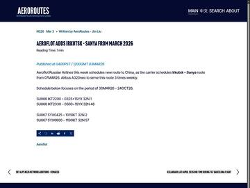
AeroroutesVisit SanyaWeibo travel guideAiF Irkutsk via mail.ruTourprom, Oct 21 Tourprom, Oct 21Tourprom, Oct 21
Tourprom, Oct 21Tourprom, Oct 21China's dengue and chikungunya rules for 2026
- National Health Commission, Announcement No. 3 of 2026 (published Mar 25): from Apr 1, chikungunya and SFTS are managed as Class B diseases. Dengue was already Class B.
- Alert China (Japanese risk site, Apr 3): says dengue and chikungunya were both newly designated. The NHC text names chikungunya and SFTS.
- National dengue and chikungunya control plan, 2026 edition (NDCPA): both are spread by mosquito bites and "do not spread directly person to person." Cases get "mosquito-proof isolation" (nets, screens, mosquito killing around them), released after 5+ days of illness and 24 h with normal temperature. Exposed people do "self health monitoring." Chlorine disinfectants inactivate the virus; adult-mosquito spraying is allowed.
- NDCPA notice 12/2026 and Q&A (Apr 10): control is environment first, biological and physical second, chemical "when necessary." Hospitals report cases within 24 h. The disinfection wording in the notice is under the SFTS paragraph.
- 2024 NHC dengue guideline: "mosquito-proof isolation" for cases and killing adult mosquitoes in wards and around them. It names no disinfection of rooms because of people.
- Hainan CDC (on the Sanya health commission site, Aug 9): dengue and chikungunya spread by Aedes bites; advises "隔离防蚊" (isolation from mosquitoes) at home.
 NDCPA plan 2026 (PDF)NDCPA notice 12NDCPA Q&AAlert China, Apr 32024 guideline (gov.cn)
NDCPA plan 2026 (PDF)NDCPA notice 12NDCPA Q&AAlert China, Apr 32024 guideline (gov.cn)Russians in Hainan: the real numbers
- Hainan Daily via People's Daily (Oct 10): Sanya Phoenix airport's border post handled 22,000+ entries and exits by Oct 7, up 28.7%, mostly Russian and Kazakh visitors.
- ATOR (Oct 14), quoting a Hainan tourism official: 573,000 Russian tourists in Jan–Sep 2026 (+68%), 40% of Hainan's foreign arrivals; 60,000 in September alone; high season started in October. No mention of disease.
- China Daily on the Hainan government site (Jan 19): 17 weekly flight pairs from Sanya to Russian cities; Siberians winter in Sanya; 400,000+ Russian guests in 2025; 30-day visa-free entry since Sept 15, 2025, set to run to Sept 2026. (Secret China gives 350,000 for 2025.)
- NTD (Oct 29) and China Observer (Oct 31): headline "500,000 Russian tourists pour in." A Japanese YouTube channel (Oct 12) says 1.6 million. No official source gives either figure for October.
 People's Daily Hainan, Oct 10People's Daily Hainan, Oct 10ATOR, Oct 14Afisha, Oct 19
People's Daily Hainan, Oct 10People's Daily Hainan, Oct 10ATOR, Oct 14Afisha, Oct 19 Hainan gov (China Daily)
Hainan gov (China Daily) Hainan gov (China Daily)Hainan gov (China Daily)People's Daily English
Hainan gov (China Daily)Hainan gov (China Daily)People's Daily EnglishHainan's mosquito control drive
- Sanya, Haitang District (Oct 9–10, Consumer Daily): trained 300 people from schools, building sites and hotels on dengue and chikungunya.
- Ding'an County (Oct 12): county head inspected "two-heat" control at building sites and firms, ordered mosquito killing and worker health checks.
- China CDC tip (Oct 10, via Sina Oct 20): October needs attention to dengue, chikungunya and Zika.
- Sanya CDC (about Oct 22, via Sanya Daily on Sohu): 25–30°C keeps the Aedes mosquito active, control must go on.
- China CDC September table: 486 dengue and 1,120 chikungunya cases nationwide, no deaths. ECDC (via WHO): 836 dengue cases in August, against 1,702 in August 2025.
- Sanya official WeChat accounts, Oct 29–31: Sanya Public Health Clinical Center explains "dengue vs. chikungunya" (Oct 29); 网信三亚 posts "9 key questions on chikungunya" (Oct 30); 崖州教育 tells teachers and parents to guard against "two fevers" and calls Sanya a Class I high-risk chikungunya area (Oct 31).
- China CDC researcher Lu Liang (Weibo, Oct 30): says China has no stable local chikungunya transmission; cases are mostly imported. He doesn't mention Sanya.
- No official Hainan or Sanya case count for October was found by any of the search teams.
 Hainan chinanews, Oct 15Hainan chinanews, Oct 15Sina, Oct 20Sohu / Sanya Daily, Oct 22WeChat search: 三亚 基孔肯雅热WeChat search: 三亚 基孔肯雅热WeChat search: 三亚 基孔肯雅热
Hainan chinanews, Oct 15Hainan chinanews, Oct 15Sina, Oct 20Sohu / Sanya Daily, Oct 22WeChat search: 三亚 基孔肯雅热WeChat search: 三亚 基孔肯雅热WeChat search: 三亚 基孔肯雅热A Belarusian dies in Hainan
- Belarus foreign ministry (via Onliner, Nasha Niva, Sputnik Belarus, Oct 26): a Belarusian citizen died in Hainan on Oct 23; the Guangzhou consulate learned of it from Hainan police on Oct 26 and is helping his wife.
- Smartpress (citing BelTA): Hainan police told Belarus on Oct 23; "no details of the tragedy" known.
- No source gives age, city or cause, or mentions plague, dengue or Sanya. Zerkalo illustrates its story with a photo of Sanya.
- Belavia flies Minsk–Sanya direct; Belarusians get 30 days visa-free (tour agency, 2025).
First posts: "one building in our community is isolated"
- A Hainan blogger video (Oct 25, via Vision Times): "What is happening in Sanya? One building in our community is isolated. We can still order takeout and go downstairs." Commenters name Dashu Gongguan and say chikungunya or dengue.
- A mainland Douyin blogger (Oct 26, via Vision Times): "Who knows how serious dengue is in Sanya now? I heard some are already isolated." The post shows a flight itinerary to Sanya Phoenix airport.
- Beijing News (Oct 31): community staff say the healthy workers were housed in the compound for about two weeks before Oct 31, so from about Oct 17.
 Beijing News, Oct 31
Beijing News, Oct 31 Beijing News, Oct 31
Beijing News, Oct 31Government hotline: "500 dengue-quarantine people" bused into a second compound
- Jiyang District public hotline, Oct 25: an owner at Qingpingle Xijun (Yingbin Rd 481) says "two buses brought 500-plus dengue-quarantine people into the compound" and put them in Building 9, with no notice from the property company. A second owner files the same complaint. This is a different compound from Evergrande Meili Zhiguan.
- Jiyang hotline, Oct 30: a caller asks whether "dengue" spot checks were carried out in Yuechuan community around 20:30 on Oct 25. Status: "being verified."
- Sanya housing bureau, Oct 27: names Shijiazhuang Bogang Construction and Hainan Hangda (site supervisor) for poor dengue and chikungunya control at the Linchun G-07 plot, phase 1.
- The tickets are public and show up in Baidu search results; screenshots of those results are below.
"Jiyang District has been sealed. All isolated."
- X @XuXiang66858 ("CCCAT", 541,900 views): claims Sanya's Jiyang District is sealed, "all isolated," and the reason "seems to be dengue and chikungunya." Posts a work chat: "All work stopped." "Everyone come back." "Everyone must be in the dorm by 20:30, or it gets reported to HQ and the police."
- Same account, videos captioned "Poly Tianjun living area": living area isolated, 13-yuan boxed meals, rooms disinfected, insecticide fog outside. Oct 29: "for now, it's dengue fever. I dare not speak."
- Reply by X @hui_en89297: says they live in Jiyang and disputes that there is a "lockdown."
- Nov 2 check: the Sanya posts were not visible on the account's public profile page (logged out). Screenshots here were taken earlier.
Sanya tests its air-raid sirens
- Sanya government notice (dated Oct 3, posted by The Paper Oct 28): air-raid siren test across the city Oct 29, 08:30–11:00: pre-alarm, alarm and all-clear once each.
- Hainan Release and Hainan TV (WeChat, posted Oct 28): the Oct 29 siren tests ran in Haikou, Sanya and other Hainan cities, not only Sanya.
- Renminbao and an Epoch Times netizen: say the sirens sounded for a long time on the day the lockdown posts spread. Local authorities call it a routine test.


"A Russian brought in the plague": the Poly Phoenix Hotel claim
- X @LUOXIANGF (罗翔——破幕推墙): claims the Poly Phoenix Hotel (347 Hedong Rd, Jiyang) was sealed for at least three days because "Russians brought in the plague." Posts a hotel-group notice: living quarters and project department fully sealed, no going out, police and enforcement at the exits, meals delivered, "at least three days from today."
- The same account posted the anonymous Erenhot "70+ patients, 40+ dead" claim on Oct 11 (1.879 million views) and the "P4 lab worker" Shanghai/Chongqing claim.
- X @wangjupaian (Oct 29): relays the sealing of a residence area and project department for "suspected dengue," at least three days, police at exits, shopping allowed in the evening, then meals delivered, everyone back by 20:30.
- X @qiuqiu23126 (Oct 29): claims a residential area and a project department are sealed for at least three days on suspected dengue.
- Reach (Nov 2): @LUOXIANGF's post 101,500 views, 313 likes, 101 reposts; @wangjupaian 28,500 views. Replies under @LUOXIANGF: @cbbtygvcc53154 "after the Fifth Plenum the plague will show itself, it was let in on purpose, stock up"; @candymbs "the big one is coming."
- Doubters under the post: @GAVINCAI12 tells him to invent stories that are harder to check, since the hotel can be booked in apps; @TiaoXiao77600 says it can still be booked; @divid_lu49394 answers that bookable doesn't mean no problem, booking sites update late.
- Grok (X's AI), asked by @simpleNnaive: says the chat screenshot shows a temporary 3-day lockdown (police, meals) but gives no cause, and finds no official or media confirmation of plague or of "Russians brought it." @Leecook7161221 replies that Russian officials always deny plague. Grok's reply page now returns 404.
- @songchanggui's Sanya video (~Oct 30): two users asked Grok about it; Grok says it looks like old COVID-era isolation footage and the plague claim exists only as chat screenshots. Both asking posts now show "deleted by the Post author"; @songchanggui's post itself was not found.
- Who owns what (sources differ): Baidu's AI search summary says the Poly Phoenix Hotel is run by Zhongzheng Poly Phoenix (Sanya) Hotel Management, owned by Anhui Zhongyi Group. 360 Search suggests a "Sanya Poly Tianyi Phoenix Hotel." Sales pages list the Poly Tianjun project's developer as Hainan Hongling Zhiye. No statement from either hotel or developer found.
r/RussianPlague26: the doubts, point by point
- u/Micro_Tyrannus (Oct 29): posts the hotel claim, flaired "Rumor / Unconfirmed," and notes it is the account behind the Inner Mongolia rumor. 96 comments.
- u/midnight_fisherman, u/sunshine-owl: the Poly Phoenix Hotel could still be booked online, including on booking.com, six hours after the post.
- u/sunshine-owl: the chat screenshots never mention plague; a translated notice in them says chikungunya cases were found at the Poly Tianjun Phase II site; mosquito clusters can bring 2–3 day "closed-loop" rules so fogging can be done; the account earlier spread a false rumor that Ren Zhiqiang had died.
- u/Quick-Character744: a 3-day quarantine doesn't fit plague, where contact quarantine is at least 7 days; residents could go shopping first; the only Russian link given is that Sanya is popular with Russians.
- Moderator u/SnowFlake202020: flight CA1378 Sanya–Beijing, Aeroflot's Sanya turnaround and train Z502 were running normally.
- u/Micro_Tyrannus (Oct 30–31): posts more "dengue lockdown" material, says he doesn't think it's plague; u/Quick-Character744 quotes the Beijing News report and the China CDC plague line.
China CDC: one plague case, one plague death, no place
- China CDC / NDCPA September report (published Oct 29): 8 Class A cases (7 cholera, 1 plague), 1 death, from plague. No place, date, age or plague type. Same table: 486 dengue, 1,120 chikungunya, no deaths.
- NTD, Epoch Times, Aboluowang (Nov 2): call it a quiet admission; say mainland media did not report it.
- Shuangliu (Chengdu) CDC staffer "Liu Qiang" (pseudonym, via NTD): plague cases are a "work secret"; Chengdu is not a plague area; CDC calls only ask about fever and "how many mosquitoes at home."
- Epoch Times (Oct 16–Nov 2): a Shuangliu resident "Sun Jingyang" (pseudonym) says a doctor told him someone back from Russia died there.
- Chengdu CDC (Nov 2): November notice lists dengue and chikungunya import risk.
 China CDC Sept reportChina CDC Sept report
China CDC Sept reportChina CDC Sept report China CDC Sept reportchinacdc.cnNTD, Nov 2NTD, Nov 2NTD, Nov 2NTD, Nov 2 (b)
China CDC Sept reportchinacdc.cnNTD, Nov 2NTD, Nov 2NTD, Nov 2NTD, Nov 2 (b)The relay: Vision Times, Shi Tao, Renminbao, NTD, YouTube
- NTD "News Frontline" (Oct 29): "Plague outbreak? Hainan suddenly locked down, 500,000 Russian tourists pour in."
- Vision Times / Kanzhongguo (Oct 30, reporter Li Muzi): relays @LUOXIANGF's screenshots and the hotel notice; says the plague claim can't be verified; Russians are 40%+ of Sanya's foreign visitors. Quotes an X user: "The Fifth Plenum is over, the plague is about to show itself, it was let in on purpose, when it's made public is decided from above."
- Shi Tao TV (Oct 30): "Russians carried plague into Sanya Poly Phoenix Hotel, fully sealed 3+ days, police at the doors, meals delivered."
- Renminbao "Hot Spot Front Line" (Oct 30): "What happened in Sanya? The net says Russian tourists carrying plague checked into a hotel." NTD broadcast segment "Sanya suddenly reports plague lockdown" at 25:49.
- Renminbao (Oct 30): a circulated notice says a Jiyang building-site living area is closed for at least 3 days with food delivered.
- Renminbao video (Oct 31): "Is Sanya repeating the lockdown nightmare?" Long blood-draw queues, workers in protective suits.
- China Observer (YouTube, 848K subscribers, ~Oct 31): "Pneumonic Plague Hits China, Hainan Lockdown Reported as 500K Russian Tourists Flock In"; claims a 9+ day lockdown in central Sanya.
- X @love2cai (Oct 30, 11,500 views): "nucleic-acid testing is back in Hainan," this time for dengue and chikungunya: a CCCC building site in Danzhou on Oct 20, rumored isolation supplies in Sanya, a whole building isolated. Reposted by @xianghuang13.
- X @LeeHamli (news digest, Oct 30): lists "online rumor: Sanya Poly Phoenix Hotel sealed for at least 3 days over an unknown epidemic."
- WeChat account 侠客发现 (~Oct 30): "On the 29th Sanya Poly Phoenix Hotel, because Russians brought in plague, was..." (title cut off in search results), citing the hotel-group notice. The only WeChat copy found; the article itself sits behind a captcha.
- X @Yiii_2002 (Oct 30): claims Jiyang ran tests and central quarantine, some people for 9 days; quotes the health commission: length "determined by the situation."
Beijing News: healthy workers housed in a residential compound
- Resident Ms Fan: workers from a nearby site where dengue broke out were lodged in Sanya Evergrande Meili Zhiguan without notice; they queued in the stairwells for blood draws; owners weren't told; she fears infection with a baby at home.
- Chunguang community committee: a site near Yuechuan had dengue and chikungunya cases; sick workers went to hospital in a dedicated vehicle. The compound (4 buildings, a hotel-apartment complex) was a "temporary placement point for people related to mosquito-borne disease, not for isolating confirmed cases." Healthy workers were housed there about two weeks for health monitoring and repeated blood draws. Door-to-door disinfection was done; rooms of found cases were specially disinfected.
- Property staff: "disinfecting and mosquito-repelling all rooms in the compound"; no worker has symptoms.
- Jiyang District health commission: all placed workers tested negative, no infection found, all moved out. Sanya CDC: workers all moved.
- The same article: dengue is spread by Aedes bites, not ordinary person-to-person contact.
- Relayed by The Paper, Sina, Baijiahao, and the WeChat accounts of 华商报, 宁波晚报, 新北方, 新晚报 and 哈尔滨日报; WeChat account 街巷有回声 adds that owners with babies wouldn't open their screens. Sina and The Paper show 0 comments.
Workers' accounts: thousands sealed, five blood draws, drones
- Epoch Times (Oct 31/Nov 1), workers under false names: dengue on several high-end residential sites incl. Poly Tianjun; thousands of workers sealed; police guard the gates 24 hours; the mayor visited; no official case count.
- "Sun Zhiyong": his site sealed about a week, ~1,000 people, 800–1,000 workers per site, 4,000–5,000 in all; "dozens of cases, otherwise it wouldn't be so strict."
- "Zhou Dafu" (China Construction Second Engineering Bureau, Hainan branch): site sealed two days, blood drawn 5 times (4 before the lockdown, the 3rd and 4th back to back), never told why; drones sprayed insecticide below roof height.
- "Zhao Jianguo": quit after three blood draws and days of unpaid queueing: "so serious, who dares work."
- Netizens (via Epoch): on Oct 29 a Jiyang dorm area got an emergency notice to return for full lockdown or be reported to police.
- Renminbao (Nov 1): "Dabai" (white-suited staff) back at community gates; residents queue for blood; police told a resident that refusing a blood draw is illegal "if it causes transmission." Says claims flipped in one day from "Sanya has plague" to "it's dengue," and asks why dengue brings such a heavy response.
- Relayed by Aboluowang and vct.news (Australia).
Today: "hundreds infected" vs. no count
- NTD: claims several Sanya sites had "hundreds" infected and 1,000+ sealed, unreported by Chinese media; lawyer Wu Shaoping says local plague deaths go up the chain before anything is public.
- Officials: have published no Sanya or Hainan case count; no official answer to the "Russian brought plague" claim; no statement from Poly, Evergrande or China Construction.
- Hong Kong CHP (via RTHK, Oct 30): one imported chikungunya case, a 44-year-old woman who was on the mainland during incubation; place not named.
- Japan's foreign ministry: no travel alert for Hainan or China as of Nov 2.
- Sanya government Weibo (Oct 30): scenic areas clearing standing water and doing "full-area disinfection (消杀)" against mosquitoes after rain.
- Chinese social media, Oct 29 – Nov 2 (public pages): Weibo hot search has no Sanya, dengue or plague topic on any day; Sanya, Hainan and Jiyang Tieba forums have no posts; Bilibili and Zhihu nothing in the window. Sina and The Paper show 0 comments under the Beijing News story.
- Baijiahao comments under Beijing News: a Hainan-IP user says strict disinfection and spraying "every other day" is needed; another says the workers live "worse than dogs"; a Shanghai-IP user asks why the blood tests weren't done at a stadium.
- A WeChat public-account item (shown in Sogou results, ~Oct 29): repeats "Sanya Poly Phoenix Hotel, because Russians brought in plague, living area and project department under lockdown."
- Search engines: Baidu's AI summary says Sanya has no citywide lockdown and calls the "lockdown" talk a misreading of road closures; it says the Poly Phoenix Hotel is operating normally. 360 suggests searches "Hainan Sanya outbreak latest, locked down again today" and "has Sanya Poly Tianyi Phoenix Hotel closed, is it true."
- X, Oct 29: @NANHAO_London says the Jiyang lockdown is unconfirmed and asks officials to publish case counts and the legal basis. Asked by @JapanJavaKing, Grok says the @wangjupaian source is a screenshot video of a WeChat group chat.
Comments
Pick any name. Say what you want, within reason. Comments show up once they are verified.